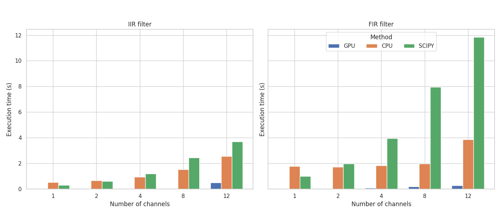

Audio DSP with the GPU¶

TorchFX is a modern Python library for digital signal processing (DSP) in audio, designed to leverage the power of PyTorch and GPU acceleration. It provides a clean and flexible API to build and compose audio processing pipelines using PyTorch modules, making it ideal for researchers, engineers, and developers working on modern audio applications.
TorchFX integrates seamlessly into PyTorch workflows, enabling real-time, differentiable audio processing and model-based DSP pipelines.
Motivation¶
While many DSP libraries exist in Python (e.g., scipy, librosa, torchaudio), they often fail to address the full spectrum of needs in contemporary audio processing, such as:
Full exploitation of GPU acceleration,
Native integration with deep learning models,
A clean, object-oriented, and modular interface,
Efficient support for multichannel audio signals.
As a result, researchers and developers frequently end up building custom, ad-hoc solutions that are hard to maintain, reuse, or scale—especially when real-time performance or AI integration is required.
Benefits of TorchFX¶
TorchFX is designed from the ground up to provide a modern, powerful, and flexible framework for audio DSP in Python:
✅ GPU Acceleration: Built on PyTorch, it allows high-performance, real-time audio processing on CUDA-enabled devices.
✅ Functional Chaining: The overloaded pipe operator (|) enables clean and readable composition of processing pipelines.
✅ Extensible API: Create custom filters and effects with ease using OOP principles.
✅ PyTorch-Compatible: All filters are subclasses of torch.nn.Module, making them seamlessly integrable with PyTorch models and training loops.
✅ High Performance: Benchmarks show substantial performance gains over SciPy, especially with long and multichannel signals.
✅ Object-Oriented DSP: Filters are designed as individual classes, promoting modularity, reusability, and testability.
Performance Insights¶
Benchmarks included in the original paper demonstrate that TorchFX outperforms traditional DSP tools like SciPy in multi-channel contexts, thanks to its efficient use of parallel GPU computation. Even on CPU, TorchFX performs competitively due to effective multi-threading and optimized PyTorch internals.
How to cite¶
If you use TorchFX in your research or project, please cite the following publication:
@misc{spanio2025torchfxmodernapproachaudio,
title={TorchFX: A modern approach to Audio DSP with PyTorch and GPU acceleration},
author={Matteo Spanio and Antonio Rodà},
year={2025},
eprint={2504.08624},
archivePrefix={arXiv},
primaryClass={eess.AS},
url={https://arxiv.org/abs/2504.08624},
}
Contents:
- Installation
- Getting Started
- API
- torchfx.Wave
- torchfx.FX
- torchfx.filter.AllPass
- torchfx.filter.Butterworth
- torchfx.filter.Chebyshev1
- torchfx.filter.Chebyshev2
- torchfx.filter.DesignableFIR
- torchfx.filter.FIR
- torchfx.filter.HiButterworth
- torchfx.filter.HiChebyshev1
- torchfx.filter.HiChebyshev2
- torchfx.filter.HiLinkwitzRiley
- torchfx.filter.HiShelving
- torchfx.filter.IIR
- torchfx.filter.LinkwitzRiley
- torchfx.filter.LoButterworth
- torchfx.filter.LoChebyshev1
- torchfx.filter.LoChebyshev2
- torchfx.filter.LoLinkwitzRiley
- torchfx.filter.LoShelving
- torchfx.filter.Notch
- torchfx.effects.FX
- torchfx.effects.Gain
- torchfx.effects.NormalizationStrategy
- torchfx.effects.Normalize
- torchfx.effects.PeakNormalizationStrategy
- torchfx.effects.PerChannelNormalizationStrategy
- torchfx.effects.PercentileNormalizationStrategy
- torchfx.effects.RMSNormalizationStrategy
- torchfx.effects.Reverb